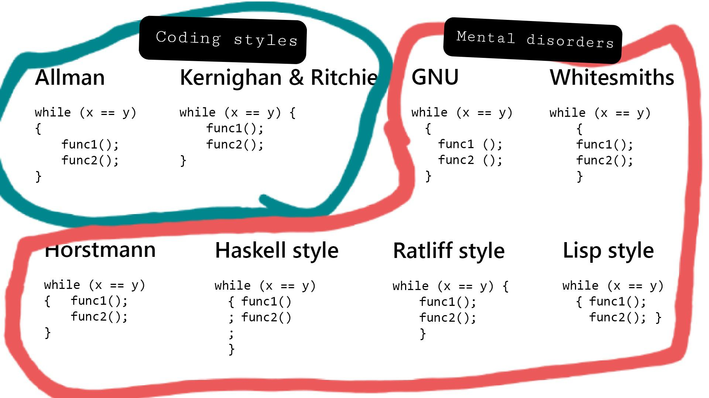
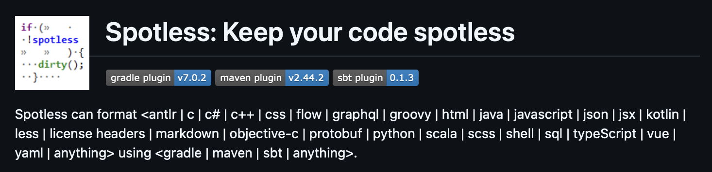

Can a Java Developer Learn Anything...
From Golang?
Grzegorz Piwowarek
@pivovarit
{ 4comprehension.com }
Independent Consultant/Trainer
distributed systems | microservices | async | reactive | java | idiomatic goWarsawJUG | Vavr Leader
@pivovarit
"Imperative"
"Boilerplate-heavy"
"Clunky"
"Bloated"
...
Words people use to describe Java!
Golang is even more "imperative", "boilerplate-heavy" than Java... and it's proud of that!
 So what...?
So what...?
Golang's Philosophy
- Simplicity/Minimalism
- Explicitness
- Developer Productivity
- Pragmatism
Any advanced syntactic feature can be substituted with a finite number of for loops and if-else statements
for rowId := 0; rowId < len(pattern)-1; rowId++ {
smudges := 0
isRef := true
for j := rowId; j >= 0; j-- {
if rowId+rowId-j+1 < len(pattern) {
diffs := rowDifferences(rowId+rowId-j+1, j, pattern)
if diffs > 1 || (diffs > 0 && smudges == 1) {
isRef = false
break
} else if diffs == 1 {
smudges++
}
}
}
if !isRef {
continue
}
if smudges == 1 {
result := rowId + 1
return true, result
}
}
return false, -1
func main() {
urls := []string{"https://golang.org", "https://example.com"}
results := make(chan string)
start := time.Now()
for _, url := range urls {
go func(url string) {
content, err := fetchURL(url)
if err != nil {
results <- fmt.Sprintf("Error fetching %s: %v", url, err)
return
}
results <- fmt.Sprintf("Fetched %s: %s...", url, content)
}(url)
}
for range urls {
fmt.Println(<-results)
}
fmt.Printf("Execution time: %v\n", time.Since(start))
}
package main
import (
"fmt"
"net/http"
)
func main() {
http.HandleFunc("/hello", func(w http.ResponseWriter, r *http.Request) {
if r.Method == http.MethodGet {
fmt.Fprintf(w, "Hello, World!")
} else {
http.Error(w, "Method not allowed", http.StatusMethodNotAllowed)
}
})
fmt.Println("Starting server on :8080...")
err := http.ListenAndServe(":8080", nil)
if err != nil {
fmt.Printf("Error starting server: %v\n", err)
}
}
Golang's Simplicity
- Three data structures: array/slice/maps
- One loop type
- Errors are values
- No mocking
- No advanced syntax
- No magical frameworks
- No ORM
So, what can we learn from Golang?
...
What's better? tabs or spaces?
"Gofmt formats Go programs. It uses tabs for indentation and blanks for alignment."https://github.com/golang/go/blob/master/src/cmd/gofmt/doc.go
Go Reduces Bikeshedding
 https://www.reddit.com/r/ProgrammerHumor/comments/137drsn/i_cant_fathom_how_any_of_those_could_be_used/No room for questions like:
What build tool should we use?
Should we use spaces or tabs?
Should we use optional parentheses around conditions?
Should we follow semantic versioning?
Which static analysis tools should we use?
...and many others
Java Alternative: Spotless
https://github.com/diffplug/spotless
<plugin>
<groupId>com.diffplug.spotless</groupId>
<artifactId>spotless-maven-plugin</artifactId>
<version>2.44.1</version>
<configuration>
<java>
<googleJavaFormat/>
</java>
</configuration>
</plugin>
mvn spotless:checkCan be plugged into Maven/Gradle lifecycle
Unfortunately, it's configurable...Available Code Styles:
- google-java-format
- eclipse jdt
- palantir-java-format
- formatAnnotations
- cleanthat
... now we can argue which code style to choose :)
Strong Focus on Pragmatism
Example: Golang Memory Model
func main() {
var ints = []int{0, 0}
go func() { ints[0] = 1 }() // async
go func() { ints[1] = 2 }() // async
for !slices.Equal(ints, []int{1, 2}) {
// busy spin ...
}
println("done, exiting!")
}
Is the main thread guaranteed to exit?
We need to consult Golang Memory ModelGolang Memory Model
"(...) If you must read the rest of this document to understand the behavior of your program, you are being too clever. Don't be clever."
Pragmatic, Not Clever Solution
func main() {
var ints = []int{0, 0}
var wg sync.WaitGroup
wg.Add(2)
go func() { defer wg.Done(); ints[0] = 1 }() // async
go func() { defer wg.Done(); ints[1] = 2 }() // async
wg.Wait()
println("done, exiting!")
}
Lessons Learned:
Don't be clever when unnecessary
Example: not sure if volatile should be used? -> use it.
Dependency Inversion by Design
Golang's interfaces are not what you think they are
Go’s interfaces are designed with the consumer (caller) in mind rather than the producer
Interfaces are implicitly implemented (duck typing)
type PostgresMovieRepository struct {
db *sql.DB
}
func (r PostgresMovieRepository) getMovie(id string) (string, error) {
query := "SELECT title FROM movies WHERE id = $1"
var title string
err := r.db.QueryRow(query, id).Scan(&title)
if err != nil {
if err == sql.ErrNoRows {
return "", fmt.Errorf("movie with id %s not found", id)
}
return "", err
}
return title, nil
}
type PostgresRentalRepository struct {
db *sql.DB
}
func (r PostgresRentalRepository) saveRentedMovie(userID, movieId string) error {
query := "INSERT INTO rentals (user_id, movie_id, rented_at) VALUES ($1, $2, NOW())"
_, err := r.db.Exec(query, userID, movieId)
return err
}
func (r PostgresRentalRepository) saveReturnedMovie(userID, movieId string) error {
query := "UPDATE rentals SET returned_at = NOW() WHERE user_id = $1 AND movie_id = $2 AND returned_at IS NULL"
result, err := r.db.Exec(query, userID, movieId)
if err != nil {
return err
}
rowsAffected, _ := result.RowsAffected()
if rowsAffected == 0 {
return fmt.Errorf("no active rental found for user %s and movie %s", userID, movieId)
}
return nil
}
type RESTMovieDescriptionsRepository struct {
apiBaseURL string
client *http.Client
}
func (r RESTMovieDescriptionsRepository) getMovieDescription(movieId string) (string, error) {
url := fmt.Sprintf("%s/movies/%s/description", r.apiBaseURL, movieId)
resp, err := r.client.Get(url)
if err != nil {
return "", err
}
defer resp.Body.Close()
if resp.StatusCode != http.StatusOK {
return "", fmt.Errorf("failed to fetch description: %s", resp.Status)
}
var result struct {
Description string `json:"description"`
}
if err := json.NewDecoder(resp.Body).Decode(&result); err != nil {
return "", err
}
return result.Description, nil
}
service := MovieRentalService{
rentalRepository: PostgresRentalRepository{db},
movieDescriptionsRepository: RESTMovieDescriptionsRepository{
"https://api.example.com",
&http.Client{}},
movieRepository: PostgresMovieRepository{db},
}
- Dependency Inversion
- Dependency Injection
Manual Dependency Injection
Dependency Injection is about external supply of dependencies
Dependency Injection Containers are just one way to achieve this
But how to test it without mocks?
Dependency Inversion Leverage
type InMemoryRentalRepository struct {
// userID -> map[movieID]isReturned
rentals map[string]map[string]bool
}
type InMemoryMovieRepository struct {
// movieID -> title
movies map[string]string
}
type InMemoryMovieDescriptionsRepository struct {
// movieID -> description
descriptions map[string]string
}
We can do the same in Java!
TODO
class MovieRentalService {
private final RentalHistoryRepository rentalHistoryRepository;
private final MovieRepository movieRepository;
public void rentMovie(String login, UUID movieId) {
// ...
if (movieRepository.exists(movieId)) {
rentalHistoryRepository.saveEvent(MovieRentalEventType.RENTED, "foo@bar.com", uuid, eventId);
}
}
public interface RentalHistoryRepository {
void saveEvent(MovieRentalEventType eventType, String login, UUID id, long eventId);
}
public interface MovieRepository {
boolean exists(UUID movieId);
}
}
public interface RentalHistoryRepository {
void saveEvent(MovieRentalEventType eventType, String login, UUID id, long eventId);
}
public interface MovieRepository {
void save(Movie movie)
}
public enum MovieRentalEventType {RENTED, RETURNED}
public static class InMemoryRentalHistoryRepository
implements MovieRentalService.RentalHistoryRepository {
private final List<MovieRentedEvent> events = Collections
.synchronizedList(new ArrayList<>());
@Override
public void save(
MovieRentalEventType eventType,
String login, UUID id) {
events.add(new MovieRentedEvent(login, id));
}
@Override
public List<UUID> findRentedBy(String user) {
return events.stream()
.filter(e -> e.login().equals(user))
.map(MovieRentedEvent::movieId)
.toList();
}
record MovieRentedEvent(String login, UUID movieId) {
}
}
@Test
void shouldRentMovie() {
MovieRentalService service = new MovieRentalService(
new InMemoryRentalHistoryRepository(),
new InMemoryMovieRepository());
var movieId = UUID.randomUUID();
var user = "foo@bar.com";
service.rentMovie(user, movieId);
assertThat(service.getRentedMovies(user))
.containsExactly(movieId);
}
main advantage: in-memory tests are blazingly fast
@RepeatedTest(10_000)
void shouldRentMovie() {
MovieRentalService service = new MovieRentalService(
new InMemoryRentalHistoryRepository(),
new InMemoryMovieRepository());
var movieId = UUID.randomUUID();
var user = "foo@bar.com";
service.rentMovie(user, movieId);
assertThat(service.getRentedMovies(user))
.containsExactly(movieId);
}
Hexagonal Architecture
 https://herbertograca.com/2017/11/16/explicit-architecture-01-ddd-hexagonal-onion-clean-cqrs-how-i-put-it-all-together/
https://herbertograca.com/2017/11/16/explicit-architecture-01-ddd-hexagonal-onion-clean-cqrs-how-i-put-it-all-together/
Import/Dependency Cycles
Golang programs must be acyclic
package main
import (
"app/user"
)
func main() {
user.Register("someone@example.com")
}
package user
import (
"app/email"
"math/rand"
)
type User struct {
ID int
Email string
}
func Register(email string) int {
// ..
NotifyUser(User{Email: email, ID: rand.Int()})
return 42
}
func NotifyUser(u User) {
email.SendWelcomeEmail(u)
}
package email
import "app/user"
func Send(body, email string) {
// ...
}
func SendWelcomeEmail(user user.User) {
Send("Welcome!", user.Email)
}
> go build
package app
imports app/user
imports app/email
imports app/user: import cycle not allowed
Acyclic Design
package email
func Send(body, email string) {
// ...
}
package user
import (
"app/email"
"math/rand"
)
type User struct {
ID int
Email string
}
func Register(login string) int {
// ..
user := User{Email: login, ID: rand.Int()}
email.Send("Welcome!", user.Email)
return 42
}
https://github.com/golang/go/issues/30247
Identifying Cycles in Java
with ArchUnit
@ArchTest
static final ArchRule shouldBeFreeOfCycles = slices()
.matching("com.pivovarit.(*)..")
.should().beFreeOfCycles()
.as("the library should be free of cycles")
.because("cycles are bad");
Thank You!
@pivovarit
4comprehension.comhttps://pivovarit.github.io/talks/learn-from-go